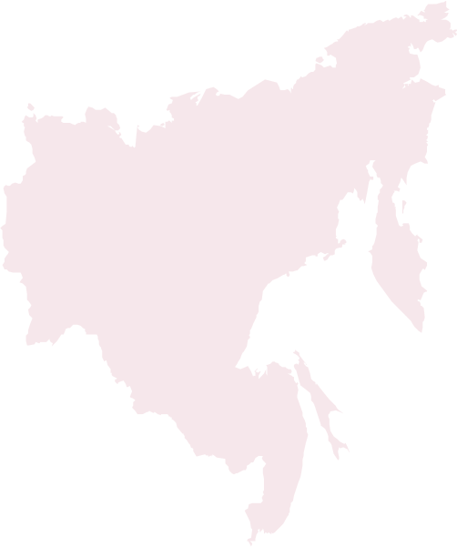
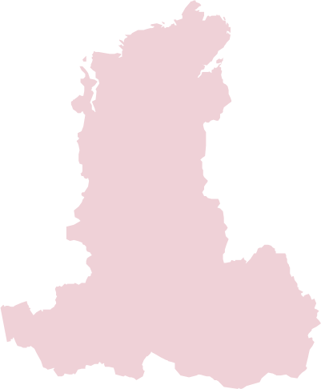
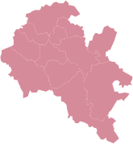
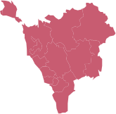
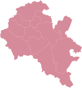
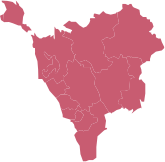
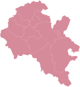
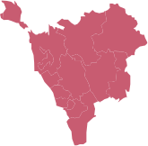

Облачные решения
Кибербезопасность
Импортозамещение
Цифровая трансформация
Поставщик услуг цифровой трансформации
и кибербезопасности
На сайт
Softline – ведущий поставщик IT-решений и сервисов.*
Мы предлагаем комплексные IT-решения, облака, программное
и аппаратное обеспечение, решения по цифровой трансформации
и кибербезопасности, а также широкий спектр IT-услуг.



 





Владивосток
Иркутск
Красноярск
Томск
Новосибирск
Омск
Сургут
Тюмень
Пермь
Челябинск
Екатеринбург
Ижевск
Санкт-Петербург
Ярославль
Калининград
Москва
Воронеж
Белгород
Н. Новгород
Самара
Казань
Уфа
Оренбург
Ростов-на-Дону
Волгоград
Краснодар